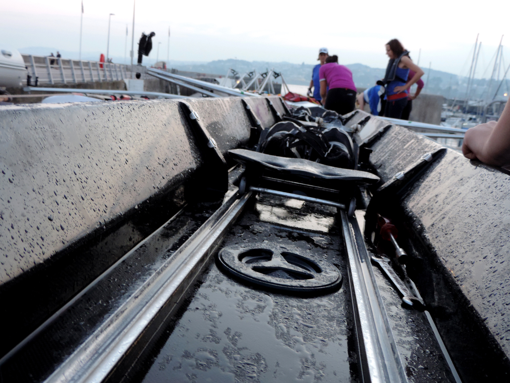

JOIN
All Full and Junior Members of Torquay Rowing Club have access to many of the facilities provided by Royal Torbay Yacht Club. Rowing membership consists of the following categories:
Full - £155.00
Junior - £55.00
Full-Time Student - £100.00
Coxswain - £50.00
Coach - £50.00